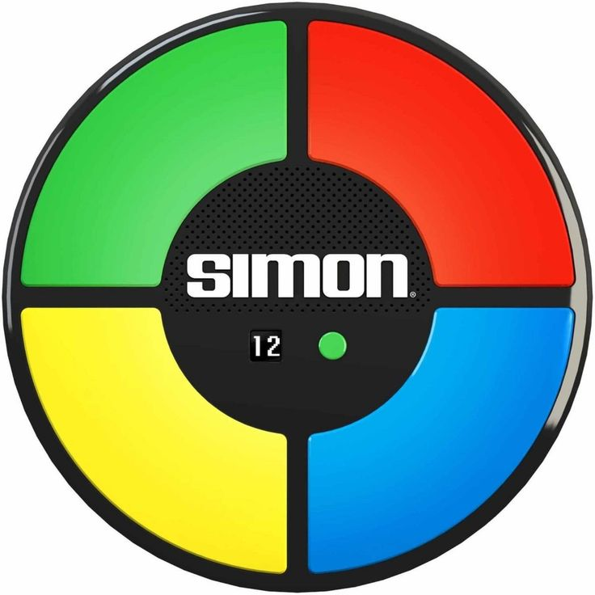

Simon Dice es un juego de memoria en el que el jugador debe repetir una secuencia de colores y sonidos generada por la computadora. Cada vez que el jugador repite la secuencia correctamente, la computadora agregará un color y sonido más a la secuencia. El juego termina cuando el jugador comete un error al repetir la secuencia.
Para jugar, simplemente haz clic en el botón "Iniciar". Simon Dice generará una secuencia de colores y sonidos. Repite la secuencia haciendo clic en los cuadrados de colores. Si cometes un error, el juego terminará y podrás ver tu puntaje final.
Si deseas ver los puntajes más altos, haz clic en el botón "Ver Puntajes".
¡Buena suerte!
Volver al Inicio